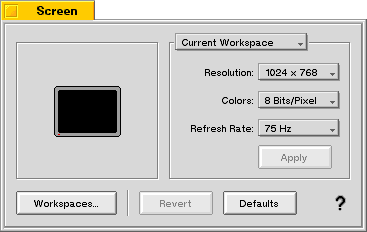

BBox¶
A BBox is a purely cosmetic and organizational view that draws a labeled border around its (view) children. The border and label are drawn within the BBox’s frame rectangle.
The current pen size of the view determines the width of the border; by default it’s 1.0 coordinate unit.
The label is drawn in the current font, which by default is the system bold font.
The label is drawn in the current high color; the default high color is black.
The BBox’s label can be a string or it can be another view, such as a control. For example, a popup menu might be used as the BBox’s label, to let the user select a group of options to view in a preference panel:
